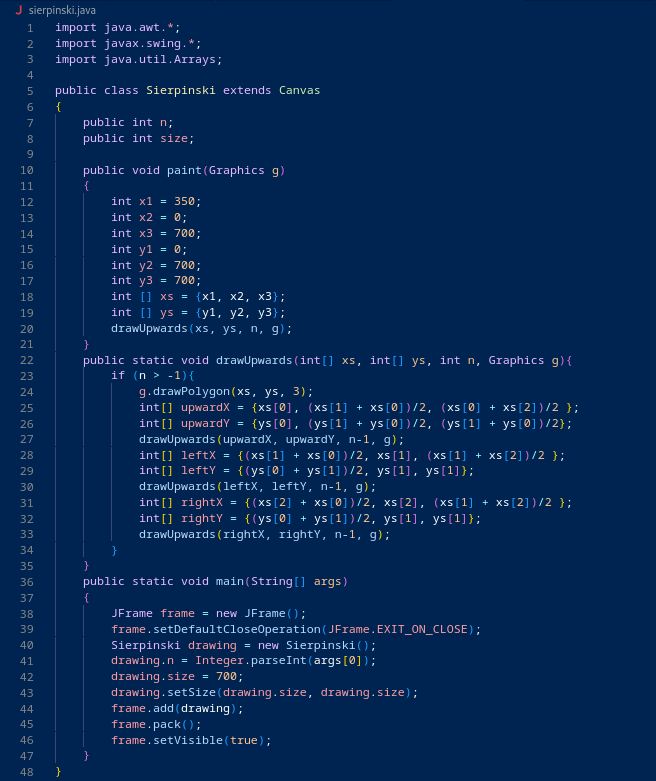

A Sierpinski triangle is a recursive structure of triangles within triangles. The order of the Sierpinski triangle refers to how many levels of nested triangles to draw.
Process: There is one outer triangle that points upward. Then we can draw a downward facing triangle within it. This then creates three new upward facing triangles (above, left, and right of the downward one), in which we can repeat this process.
This program take the order as a command-line argument (e.g., java Sierpinksi 2) and draws the corresponding Sierpinksi triangle
I really liked this project because it was my first program where I used java AWT and Swing. This was very different from my previous experience of getting output on the command line terminal, it was more visual, and I really liked that. This allowed me to begin to see what other user interface implementations I could use in my code. Overall, this project was a very good introduction to Java AWT and Swing, and allowed me to make an integrated and involved recursion application to generate a Sierpinski Triangle.
Here is my code:
